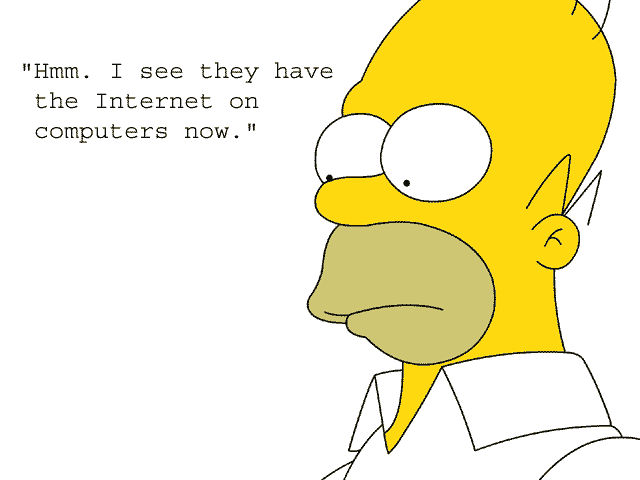

This small site demonstrates use of graphics on web pages. This page includes code to display images.
gif image example
The gif format works best for simple line art with lots of solid color.
image dimensions:240 x 180
file size:168 KB
jpg image example

jpg is the best format for photos or art with complex color (like gradients)
image dimensions:213 x 140
file size: 86 KB
png image example
Use the png format for combination graphics that don't look good as gif or jpg or when you need alpha transparency.
image dimensions:150 × 230
file size:25 KB